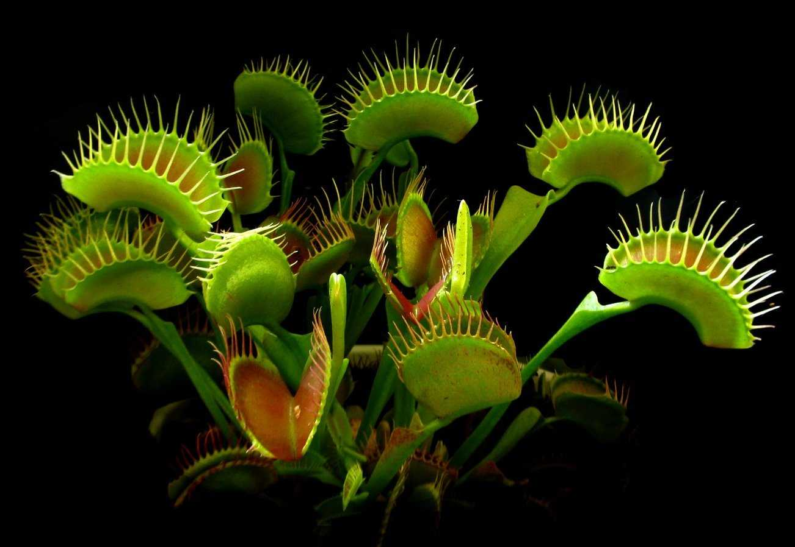
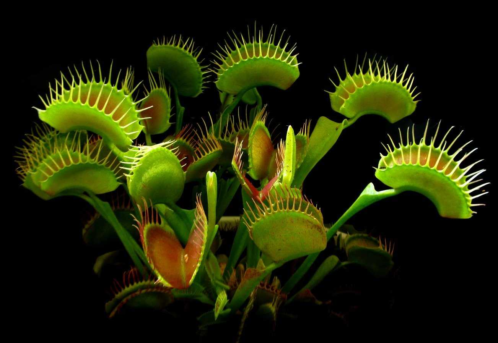

Венерина мухоловка
Описание
Венерина мухоловка имеет розеточное расположение листьев, которые имеют форму ловушек. Эти ловушки состоят из двух лепестковидных частей, с рецепторами по краям, которые закрываются, как игрыш капкана, при прикосновении к ним. Ловушки также имеют волоски, которые выступают в роли сенсоров для определения присутствия добычи. После захвата насекомого, листы секретируют кислоту и ферменты, которые разлагают добычу и обеспечивают питательные вещества для растения.
Галерея
 

Советы по уходу
Требования
Венерина мухоловка требует яркого и прямого света, прохладной температуры, умеренного полива, кислого и дренированного грунта, кормления насекомыми и периода покоя в холодные месяцы с уменьшенным поливом и прохладной температурой.